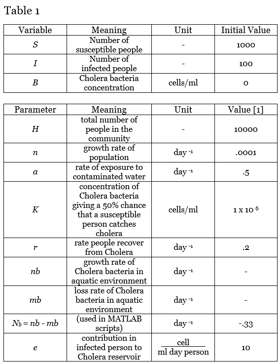
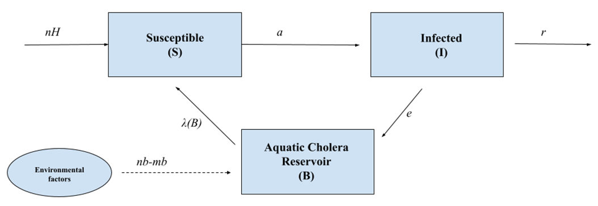

<!DOCTYPE html>


<html lang="en" >

  <head>
    <meta charset="utf-8" />
    <meta name="viewport" content="width=device-width, initial-scale=1.0" /><meta name="generator" content="Docutils 0.17.1: http://docutils.sourceforge.net/" />

    <title>3. Cholera in Haiti &#8212; An Introduction to Python Jupyter Notebooks for College Math Teachers</title>
  
  
  
  <script data-cfasync="false">
    document.documentElement.dataset.mode = localStorage.getItem("mode") || "";
    document.documentElement.dataset.theme = localStorage.getItem("theme") || "light";
  </script>
  
  <!-- Loaded before other Sphinx assets -->
  <link href="../../_static/styles/theme.css?digest=e353d410970836974a52" rel="stylesheet" />
<link href="../../_static/styles/bootstrap.css?digest=e353d410970836974a52" rel="stylesheet" />
<link href="../../_static/styles/pydata-sphinx-theme.css?digest=e353d410970836974a52" rel="stylesheet" />

  
  <link href="../../_static/vendor/fontawesome/6.1.2/css/all.min.css?digest=e353d410970836974a52" rel="stylesheet" />
  <link rel="preload" as="font" type="font/woff2" crossorigin href="../../_static/vendor/fontawesome/6.1.2/webfonts/fa-solid-900.woff2" />
<link rel="preload" as="font" type="font/woff2" crossorigin href="../../_static/vendor/fontawesome/6.1.2/webfonts/fa-brands-400.woff2" />
<link rel="preload" as="font" type="font/woff2" crossorigin href="../../_static/vendor/fontawesome/6.1.2/webfonts/fa-regular-400.woff2" />

    <link rel="stylesheet" type="text/css" href="../../_static/pygments.css" />
    <link rel="stylesheet" href="../../_static/styles/sphinx-book-theme.css?digest=14f4ca6b54d191a8c7657f6c759bf11a5fb86285" type="text/css" />
    <link rel="stylesheet" type="text/css" href="../../_static/togglebutton.css" />
    <link rel="stylesheet" type="text/css" href="../../_static/copybutton.css" />
    <link rel="stylesheet" type="text/css" href="../../_static/mystnb.4510f1fc1dee50b3e5859aac5469c37c29e427902b24a333a5f9fcb2f0b3ac41.css" />
    <link rel="stylesheet" type="text/css" href="../../_static/sphinx-thebe.css" />
    <link rel="stylesheet" type="text/css" href="../../_static/design-style.4045f2051d55cab465a707391d5b2007.min.css" />
  
  <!-- Pre-loaded scripts that we'll load fully later -->
  <link rel="preload" as="script" href="../../_static/scripts/bootstrap.js?digest=e353d410970836974a52" />
<link rel="preload" as="script" href="../../_static/scripts/pydata-sphinx-theme.js?digest=e353d410970836974a52" />

    <script data-url_root="../../" id="documentation_options" src="../../_static/documentation_options.js"></script>
    <script src="../../_static/jquery.js"></script>
    <script src="../../_static/underscore.js"></script>
    <script src="../../_static/_sphinx_javascript_frameworks_compat.js"></script>
    <script src="../../_static/doctools.js"></script>
    <script src="../../_static/clipboard.min.js"></script>
    <script src="../../_static/copybutton.js"></script>
    <script src="../../_static/scripts/sphinx-book-theme.js?digest=5a5c038af52cf7bc1a1ec88eea08e6366ee68824"></script>
    <script>let toggleHintShow = 'Click to show';</script>
    <script>let toggleHintHide = 'Click to hide';</script>
    <script>let toggleOpenOnPrint = 'true';</script>
    <script src="../../_static/togglebutton.js"></script>
    <script src="https://cdnjs.cloudflare.com/ajax/libs/require.js/2.3.4/require.min.js"></script>
    <script>var togglebuttonSelector = '.toggle, .admonition.dropdown';</script>
    <script src="../../_static/design-tabs.js"></script>
    <script>const THEBE_JS_URL = "https://unpkg.com/thebe@0.8.2/lib/index.js"
const thebe_selector = ".thebe,.cell"
const thebe_selector_input = "pre"
const thebe_selector_output = ".output, .cell_output"
</script>
    <script async="async" src="../../_static/sphinx-thebe.js"></script>
    <script>window.MathJax = {"options": {"processHtmlClass": "tex2jax_process|mathjax_process|math|output_area"}}</script>
    <script defer="defer" src="https://cdn.jsdelivr.net/npm/mathjax@3/es5/tex-mml-chtml.js"></script>
    <script>DOCUMENTATION_OPTIONS.pagename = 'Undergrad/AppliedDifEq/cholera';</script>
    <link rel="index" title="Index" href="../../genindex.html" />
    <link rel="search" title="Search" href="../../search.html" />
    <link rel="next" title="4. HIV-AIDS" href="hiv/hiv.html" />
    <link rel="prev" title="2. The Basic SIR Model" href="sir.html" />
  <meta name="viewport" content="width=device-width, initial-scale=1"/>
  <meta name="docsearch:language" content="en"/>
  </head>
  
  
  <body data-bs-spy="scroll" data-bs-target=".bd-toc-nav" data-offset="180" data-bs-root-margin="0px 0px -60%" data-default-mode="">

  
  
  <a class="skip-link" href="#main-content">Skip to main content</a>
  
  <input type="checkbox"
          class="sidebar-toggle"
          name="__primary"
          id="__primary"/>
  <label class="overlay overlay-primary" for="__primary"></label>
  
  <input type="checkbox"
          class="sidebar-toggle"
          name="__secondary"
          id="__secondary"/>
  <label class="overlay overlay-secondary" for="__secondary"></label>
  
  <div class="search-button__wrapper">
    <div class="search-button__overlay"></div>
    <div class="search-button__search-container">
<form class="bd-search d-flex align-items-center"
      action="../../search.html"
      method="get">
  <i class="fa-solid fa-magnifying-glass"></i>
  <input type="search"
         class="form-control"
         name="q"
         id="search-input"
         placeholder="Search this book..."
         aria-label="Search this book..."
         autocomplete="off"
         autocorrect="off"
         autocapitalize="off"
         spellcheck="false"/>
  <span class="search-button__kbd-shortcut"><kbd class="kbd-shortcut__modifier">Ctrl</kbd>+<kbd>K</kbd></span>
</form></div>
  </div>
  
    <nav class="bd-header navbar navbar-expand-lg bd-navbar">
    </nav>
  
  <div class="bd-container">
    <div class="bd-container__inner bd-page-width">
      
      <div class="bd-sidebar-primary bd-sidebar">
        

  
  <div class="sidebar-header-items sidebar-primary__section">
    
    
    
    
  </div>
  
    <div class="sidebar-primary-items__start sidebar-primary__section">
        <div class="sidebar-primary-item">
  

<a class="navbar-brand logo" href="../../intro.html">
  
  
  
  
    
    
      
    
    
    
    <script>document.write(``);</script>
  
  
</a></div>
        <div class="sidebar-primary-item"><nav class="bd-links" id="bd-docs-nav" aria-label="Main">
    <div class="bd-toc-item navbar-nav active">
        
        <ul class="nav bd-sidenav bd-sidenav__home-link">
            <li class="toctree-l1">
                <a class="reference internal" href="../../intro.html">
                    An Introduction to  Python Jupyter Notebooks for College Math Teachers
                </a>
            </li>
        </ul>
        <p aria-level="2" class="caption" role="heading"><span class="caption-text">PREFACE</span></p>
<ul class="nav bd-sidenav">
<li class="toctree-l1"><a class="reference internal" href="../../preface.html">Preface</a></li>
<li class="toctree-l1"><a class="reference internal" href="../../JMM23.html">JMM 2023</a></li>
<li class="toctree-l1"><a class="reference internal" href="../../PatternsSOLUTION.html">Patterns</a></li>
</ul>
<p aria-level="2" class="caption" role="heading"><span class="caption-text">PRE-COLLEGE</span></p>
<ul class="nav bd-sidenav">
<li class="toctree-l1"><a class="reference internal" href="../../Elementary/Arithmetic/elementary.html">Elementary Blackboard Problems</a></li>
<li class="toctree-l1"><a class="reference internal" href="../../PreCollege/GettingStarted/python.html">Beginning Python Programming</a></li>
<li class="toctree-l1"><a class="reference internal" href="../../PreCollege/Celestial/Chicago.html">Glimpse of Chicago</a></li>
<li class="toctree-l1"><a class="reference internal" href="../../PreCollege/Celestial/steam.html">Arts in STEM (STEAM)</a></li>
<li class="toctree-l1"><a class="reference internal" href="../../PreCollege/Celestial/demo.html">After-School Program Demo</a></li>
</ul>
<p aria-level="2" class="caption" role="heading"><span class="caption-text">PYTHON PROGRAMMING GUIDE Thomas VanDrunen, Yiheng Liang</span></p>
<ul class="nav bd-sidenav">
<li class="toctree-l1"><a class="reference internal" href="../../Intropy.html">Transition to College Curriculum</a></li>
<li class="toctree-l1"><a class="reference internal" href="../../Programming/Introduction_to_Python.html">Introduction to Python</a></li>
<li class="toctree-l1"><a class="reference internal" href="../../Programming/Data.html">Working with Data</a></li>


<li class="toctree-l1"><a class="reference internal" href="../../Programming/solutions.html">Solution to Exercises</a></li>
</ul>
<p aria-level="2" class="caption" role="heading"><span class="caption-text">PROBABILITY Laura Gross, Yiheng Liang</span></p>
<ul class="nav bd-sidenav">
<li class="toctree-l1"><a class="reference internal" href="../../Prob.html">Probability Models</a></li>
<li class="toctree-l1"><a class="reference internal" href="../../ProbStat/ProbIntro/prob.html">Introduction</a></li>
<li class="toctree-l1"><a class="reference internal" href="../../ProbStat/ProbIntro/prob1.html">Random Numbers</a></li>
<li class="toctree-l1"><a class="reference internal" href="../../ProbStat/ProbIntro/prob2.html">Probability</a></li>
<li class="toctree-l1"><a class="reference internal" href="../../ProbStat/ProbIntro/prob3.html">Conditional probability</a></li>
<li class="toctree-l1"><a class="reference internal" href="../../ProbStat/ProbIntro/prob4.html">Probability Distributions</a></li>
<li class="toctree-l1"><a class="reference internal" href="../../ProbStat/ProbIntro/prob4a.html">Random walks</a></li>

<li class="toctree-l1"><a class="reference internal" href="../../ProbStat/ProbIntro/prob5.html">Agent-based models</a></li>
<li class="toctree-l1"><a class="reference internal" href="../../ProbStat/ProbIntro/prob6.html">Mathematical Games</a></li>
<li class="toctree-l1"><a class="reference internal" href="../../ProbStat/ProbIntro/solutions.html">Solution to Exercises</a></li>
</ul>
<p aria-level="2" class="caption" role="heading"><span class="caption-text">EXPLORATORY DATA ANALYSIS Peter Jantsch</span></p>
<ul class="nav bd-sidenav">
<li class="toctree-l1"><a class="reference internal" href="../../Data.html">Exploratory Data Analysis</a></li>
</ul>
<p aria-level="2" class="caption" role="heading"><span class="caption-text">STATISTICAL INFERENCE Peter Jantsch, Claire Wagner</span></p>
<ul class="nav bd-sidenav">
<li class="toctree-l1"><a class="reference internal" href="../../Stat.html">Statistical Inference</a></li>
<li class="toctree-l1"><a class="reference internal" href="../../ProbStat/StatInf/00_Instructor_Notes.html">Introduction and Instructor Notes</a></li>
<li class="toctree-l1"><a class="reference internal" href="../../ProbStat/StatInf/01_Foundations.html">Foundations of Statistical Inference</a></li>
<li class="toctree-l1"><a class="reference internal" href="../../ProbStat/StatInf/02_Inference_Categorical.html">Hypothesis Testing for Categorical Data</a></li>
<li class="toctree-l1"><a class="reference internal" href="../../ProbStat/StatInf/03_Inference_Numerical.html">Hypothesis Testing for Numerical Data</a></li>
<li class="toctree-l1"><a class="reference internal" href="../../ProbStat/StatInf/04_Regression.html">Linear Regression</a></li>
</ul>
<p aria-level="2" class="caption" role="heading"><span class="caption-text">CALCULUS  Inne Singgih</span></p>
<ul class="nav bd-sidenav">
<li class="toctree-l1"><a class="reference internal" href="../Calculus/Intro.html">1. Introduction</a></li>
<li class="toctree-l1"><a class="reference internal" href="../Calculus/2Functions.html">2. Functions</a></li>
<li class="toctree-l1"><a class="reference internal" href="../Calculus/3Limits.html">3. Limits, Continuity, and Rates</a></li>
<li class="toctree-l1"><a class="reference internal" href="../Calculus/4%20Derivatives.html">4. Derivatives</a></li>
<li class="toctree-l1"><a class="reference internal" href="../Calculus/5%20Integrals.html">5. Integrals</a></li>
<li class="toctree-l1"><a class="reference internal" href="../Calculus/6%20Parametric%20Equations.html">6. Parametric Equations</a></li>
<li class="toctree-l1"><a class="reference internal" href="../Calculus/7%20Sequences%20and%20Series.html">7. Sequences and Series</a></li>
<li class="toctree-l1"><a class="reference internal" href="../Calculus/Solutions.html">Solution to Calculus Exercises</a></li>
</ul>
<p aria-level="2" class="caption" role="heading"><span class="caption-text">CALCULUS FOR DAILY LIFE  Wheaton College Team</span></p>
<ul class="nav bd-sidenav">
<li class="toctree-l1"><a class="reference internal" href="../AppliedCalc/twocommodity.html">1. Linear Systems and the 2 Commodity Model</a></li>
<li class="toctree-l1"><a class="reference internal" href="../AppliedCalc/marginal.html">2. Marginal and Average Cost</a></li>
<li class="toctree-l1"><a class="reference internal" href="../AppliedCalc/design.html">3. Optimization and Object Design</a></li>
<li class="toctree-l1"><a class="reference internal" href="../AppliedCalc/cobbs.html">4. Optimization and Cobbs-Douglas Production</a></li>
<li class="toctree-l1"><a class="reference internal" href="../AppliedCalc/rates.html">5. Related Rates and Volumes</a></li>
<li class="toctree-l1"><a class="reference internal" href="../AppliedCalc/football.html">6. Related Rates with Trig Functions and Football</a></li>
<li class="toctree-l1"><a class="reference internal" href="../AppliedCalc/jnb7.html">7. Probability Distributions and Drive Thrus</a></li>
<li class="toctree-l1"><a class="reference internal" href="../AppliedCalc/control.html">8. Normal Distribution and Process Control</a></li>
<li class="toctree-l1"><a class="reference internal" href="../AppliedCalc/ols.html">9. Partial Derivatives and OLS Regression</a></li>
<li class="toctree-l1"><a class="reference internal" href="../AppliedCalc/gini.html">10. Area Between Curves and the Gini Index</a></li>
<li class="toctree-l1"><a class="reference internal" href="../AppliedCalc/income.html">11. Integral Test and Income Streams</a></li>
<li class="toctree-l1"><a class="reference internal" href="../AppliedCalc/ode.html">12. Ordinary Differential Equations and Exponential Growth/Decay</a></li>
</ul>
<p aria-level="2" class="caption" role="heading"><span class="caption-text">LINEAR ALGEBRA Soheil Anbouhi</span></p>
<ul class="nav bd-sidenav">
<li class="toctree-l1"><a class="reference internal" href="../../Linear.html">Linear Algebra</a></li>
<li class="toctree-l1"><a class="reference internal" href="../Linear/0.html">Introduction</a></li>
<li class="toctree-l1"><a class="reference internal" href="../Linear/1.html">1. Linear Systems</a></li>
<li class="toctree-l1"><a class="reference internal" href="../Linear/2.html">2. Matrices and Determinants</a></li>
<li class="toctree-l1"><a class="reference internal" href="../Linear/3.html">3. Linear Transformations</a></li>
<li class="toctree-l1"><a class="reference internal" href="../Linear/4.html">4. Eigenvalues and Eigenvectors</a></li>
<li class="toctree-l1"><a class="reference internal" href="../Linear/5.html">5. Orthogonality</a></li>
<li class="toctree-l1"><a class="reference internal" href="../Linear/Solutions.html">Solutions to Exercises</a></li>
</ul>
<p aria-level="2" class="caption" role="heading"><span class="caption-text">LINEAR ALGEBRA AND OPTIMIZATION FOR DATA ANALYSIS Wheaton College Team</span></p>
<ul class="nav bd-sidenav">
<li class="toctree-l1"><a class="reference internal" href="../../Aplin.html">Applied Linear Algebra</a></li>
<li class="toctree-l1"><a class="reference internal" href="../../Advanced/LinearAlgebra/Introduction.html">1. Introduction</a></li>
<li class="toctree-l1"><a class="reference internal" href="../../Advanced/LinearAlgebra/OLS/jnb1.html">2. OLS Linear Regression</a></li>
<li class="toctree-l1"><a class="reference internal" href="../../Advanced/LinearAlgebra/KMeans/jnb2.html">3. K-means Clustering</a></li>
<li class="toctree-l1"><a class="reference internal" href="../../Advanced/LinearAlgebra/PCA/jnb3.html">4. Dimension Reduction by Principal Component Analysis</a></li>
<li class="toctree-l1"><a class="reference internal" href="../../Advanced/LinearAlgebra/SVM/jnb4.html">5. Binary Classification of Labelled Data by Support Vector Machines</a></li>
</ul>
<p aria-level="2" class="caption" role="heading"><span class="caption-text">DIFFERENTIAL EQUATIONS Rachel Petrik</span></p>
<ul class="nav bd-sidenav">
<li class="toctree-l1"><a class="reference internal" href="../../DifEq.html">Differential Equations</a></li>
<li class="toctree-l1"><a class="reference internal" href="../DifEq/Differential%20Equations.html">1. Overview of Chapter</a></li>
<li class="toctree-l1"><a class="reference internal" href="../DifEq/DE2.html">2. Introduction to Differential Equations</a></li>
<li class="toctree-l1"><a class="reference internal" href="../DifEq/DE3.html">3. First-Order Differential Equations</a></li>
<li class="toctree-l1"><a class="reference internal" href="../DifEq/DE4.html">4. Second-Order Differential Equations</a></li>
<li class="toctree-l1"><a class="reference internal" href="../DifEq/DE5.html">5. Systems of First-Order Differential Equations</a></li>
<li class="toctree-l1"><a class="reference internal" href="../DifEq/DE6.html">6. Laplace Transforms</a></li>
<li class="toctree-l1"><a class="reference internal" href="../DifEq/DESolutions.html">Solutions to Exercises</a></li>
</ul>
<p aria-level="2" class="caption" role="heading"><span class="caption-text">DIFFERENTIAL EQUATIONS FOR THE BENEFIT OF SOCIETY Wheaton College Team</span></p>
<ul class="current nav bd-sidenav">
<li class="toctree-l1"><a class="reference internal" href="sir.html">2. The Basic SIR Model</a></li>
<li class="toctree-l1 current active"><a class="current reference internal" href="#">3. Cholera in Haiti</a></li>
<li class="toctree-l1"><a class="reference internal" href="hiv/hiv.html">4. HIV-AIDS</a></li>
<li class="toctree-l1"><a class="reference internal" href="cws/cws.html">5. CWS Model of Alzheimer’s Disease</a></li>
<li class="toctree-l1"><a class="reference internal" href="gravity/gravity.html">6. Gravity Fed Water Delivery</a></li>
<li class="toctree-l1"><a class="reference internal" href="solutions.html">Solutions to Exercises</a></li>
</ul>
<p aria-level="2" class="caption" role="heading"><span class="caption-text">COMPLEX VARIABLES IN GROUNDWATER MODELING Wheaton College Team</span></p>
<ul class="nav bd-sidenav">
<li class="toctree-l1"><a class="reference internal" href="../../Advanced/Complex/jnb1.html">1. Setting the Scene</a></li>
<li class="toctree-l1"><a class="reference internal" href="../../Advanced/Complex/jnb2.html">2. Complex Analysis Background</a></li>
<li class="toctree-l1"><a class="reference internal" href="../../Advanced/Complex/jnb3.html">3. Idealized Groundwater Flow</a></li>
<li class="toctree-l1"><a class="reference internal" href="../../Advanced/Complex/jnb4.html">4. Contaminant Extraction Modeling</a></li>
<li class="toctree-l1"><a class="reference internal" href="../../Advanced/Complex/Complex_Potentials.html">Complex Potentials</a></li>
<li class="toctree-l1"><a class="reference internal" href="../../Advanced/Complex/model.html">Fischer-Calo Contaminant Model</a></li>
</ul>
<p aria-level="2" class="caption" role="heading"><span class="caption-text">ADVANCED DATA ANALYSIS Ying Li, Jonathan Zhu</span></p>
<ul class="nav bd-sidenav">
<li class="toctree-l1"><a class="reference internal" href="../../AdvData.html">Advanced Data Analysis</a></li>
<li class="toctree-l1"><a class="reference internal" href="../../Advanced/AdvDataAnalysis/sec0_data.html">0. Before Reading</a></li>
<li class="toctree-l1"><a class="reference internal" href="../../Advanced/AdvDataAnalysis/sec1_preprocessing.html">1. Preprocessing</a></li>
<li class="toctree-l1"><a class="reference internal" href="../../Advanced/AdvDataAnalysis/sec2_transform_features.html">2. About Text Data</a></li>
<li class="toctree-l1"><a class="reference internal" href="../../Advanced/AdvDataAnalysis/sec3_doc_embedding.html">3. Document Embedding</a></li>
<li class="toctree-l1"><a class="reference internal" href="../../Advanced/AdvDataAnalysis/sec4_classification_algos.html">4. Classification of Texts</a></li>
<li class="toctree-l1"><a class="reference internal" href="../../Advanced/AdvDataAnalysis/sec5_classification_eval.html">5. Evaluating Classification</a></li>
<li class="toctree-l1"><a class="reference internal" href="../../Advanced/AdvDataAnalysis/sec6_applications.html">6. Applications</a></li>
<li class="toctree-l1"><a class="reference internal" href="../../genindex.html">INDEX</a></li>
</ul>

    </div>
</nav></div>
    </div>
  
  
  <div class="sidebar-primary-items__end sidebar-primary__section">
  </div>
  
  <div id="rtd-footer-container"></div>


      </div>
      
      <main id="main-content" class="bd-main">
        
        

<div class="sbt-scroll-pixel-helper"></div>

          <div class="bd-content">
            <div class="bd-article-container">
              
              <div class="bd-header-article">
<div class="header-article-items header-article__inner">
  
    <div class="header-article-items__start">
      
        <div class="header-article-item"><label class="sidebar-toggle primary-toggle btn btn-sm" for="__primary" title="Toggle primary sidebar" data-bs-placement="bottom" data-bs-toggle="tooltip">
  <span class="fa-solid fa-bars"></span>
</label></div>
      
    </div>
  
  
    <div class="header-article-items__end">
      
        <div class="header-article-item">

<div class="article-header-buttons">


<div class="dropdown dropdown-launch-buttons">
  <button class="btn dropdown-toggle" type="button" data-bs-toggle="dropdown" aria-expanded="false" aria-label="Launch interactive content">
    <i class="fas fa-rocket"></i>
  </button>
  <ul class="dropdown-menu">
      
      
      
      <li><a href="https://mybinder.org/v2/gh/timothyprojectGiG/JB_Math_Textbook/main?urlpath=tree/src/Undergrad/AppliedDifEq/cholera.ipynb" target="_blank"
   class="btn btn-sm dropdown-item"
   title="Launch onBinder"
   data-bs-placement="left" data-bs-toggle="tooltip"
>
  

<span class="btn__icon-container">
  
    
  </span>
<span class="btn__text-container">Binder</span>
</a>
</li>
      
  </ul>
</div>


<div class="dropdown dropdown-source-buttons">
  <button class="btn dropdown-toggle" type="button" data-bs-toggle="dropdown" aria-expanded="false" aria-label="Source repositories">
    <i class="fab fa-github"></i>
  </button>
  <ul class="dropdown-menu">
      
      
      
      <li><a href="https://github.com/timothyprojectGiG/JB_Math_Textbook" target="_blank"
   class="btn btn-sm btn-source-repository-button dropdown-item"
   title="Source repository"
   data-bs-placement="left" data-bs-toggle="tooltip"
>
  

<span class="btn__icon-container">
  <i class="fab fa-github"></i>
  </span>
<span class="btn__text-container">Repository</span>
</a>
</li>
      
      
      
      
      <li><a href="https://github.com/timothyprojectGiG/JB_Math_Textbook/issues/new?title=Issue%20on%20page%20%2FUndergrad/AppliedDifEq/cholera.html&body=Your%20issue%20content%20here." target="_blank"
   class="btn btn-sm btn-source-issues-button dropdown-item"
   title="Open an issue"
   data-bs-placement="left" data-bs-toggle="tooltip"
>
  

<span class="btn__icon-container">
  <i class="fas fa-lightbulb"></i>
  </span>
<span class="btn__text-container">Open issue</span>
</a>
</li>
      
  </ul>
</div>


<div class="dropdown dropdown-download-buttons">
  <button class="btn dropdown-toggle" type="button" data-bs-toggle="dropdown" aria-expanded="false" aria-label="Download this page">
    <i class="fas fa-download"></i>
  </button>
  <ul class="dropdown-menu">
      
      
      
      <li><a href="../../_sources/Undergrad/AppliedDifEq/cholera.ipynb" target="_blank"
   class="btn btn-sm btn-download-source-button dropdown-item"
   title="Download source file"
   data-bs-placement="left" data-bs-toggle="tooltip"
>
  

<span class="btn__icon-container">
  <i class="fas fa-file"></i>
  </span>
<span class="btn__text-container">.ipynb</span>
</a>
</li>
      
      
      
      
      <li>
<button onclick="window.print()"
  class="btn btn-sm btn-download-pdf-button dropdown-item"
  title="Print to PDF"
  data-bs-placement="left" data-bs-toggle="tooltip"
>
  

<span class="btn__icon-container">
  <i class="fas fa-file-pdf"></i>
  </span>
<span class="btn__text-container">.pdf</span>
</button>
</li>
      
  </ul>
</div>


<button onclick="toggleFullScreen()"
  class="btn btn-sm btn-fullscreen-button"
  title="Fullscreen mode"
  data-bs-placement="bottom" data-bs-toggle="tooltip"
>
  

<span class="btn__icon-container">
  <i class="fas fa-expand"></i>
  </span>

</button>


<script>
document.write(`
  <button class="theme-switch-button btn btn-sm btn-outline-primary navbar-btn rounded-circle" title="light/dark" aria-label="light/dark" data-bs-placement="bottom" data-bs-toggle="tooltip">
    <span class="theme-switch" data-mode="light"><i class="fa-solid fa-sun"></i></span>
    <span class="theme-switch" data-mode="dark"><i class="fa-solid fa-moon"></i></span>
    <span class="theme-switch" data-mode="auto"><i class="fa-solid fa-circle-half-stroke"></i></span>
  </button>
`);
</script>

<script>
document.write(`
  <button class="btn btn-sm navbar-btn search-button search-button__button" title="Search" aria-label="Search" data-bs-placement="bottom" data-bs-toggle="tooltip">
    <i class="fa-solid fa-magnifying-glass"></i>
  </button>
`);
</script>
<label class="sidebar-toggle secondary-toggle btn btn-sm" for="__secondary"title="Toggle secondary sidebar" data-bs-placement="bottom" data-bs-toggle="tooltip">
    <span class="fa-solid fa-list"></span>
</label>
</div></div>
      
    </div>
  
</div>
</div>
              
              

<div id="jb-print-docs-body" class="onlyprint">
    <h1>3. Cholera in Haiti</h1>
    <!-- Table of contents -->
    <div id="print-main-content">
        <div id="jb-print-toc">
            
            <div>
                <h2> Contents </h2>
            </div>
            <nav aria-label="Page">
                <ul class="visible nav section-nav flex-column">
<li class="toc-h2 nav-item toc-entry"><a class="reference internal nav-link" href="#introduction">Introduction</a></li>
<li class="toc-h2 nav-item toc-entry"><a class="reference internal nav-link" href="#sir-model">SIR Model</a></li>
<li class="toc-h2 nav-item toc-entry"><a class="reference internal nav-link" href="#exercises">Exercises</a><ul class="nav section-nav flex-column">
<li class="toc-h3 nav-item toc-entry"><a class="reference internal nav-link" href="#references">References</a></li>
</ul>
</li>
</ul>
            </nav>
        </div>
    </div>
</div>

              
                
<div id="searchbox"></div>
                <article class="bd-article" role="main">
                  
  <section class="tex2jax_ignore mathjax_ignore" id="cholera-in-haiti">
<h1>3. Cholera in Haiti<a class="headerlink" href="#cholera-in-haiti" title="Permalink to this heading">#</a></h1>
<section id="introduction">
<h2>Introduction<a class="headerlink" href="#introduction" title="Permalink to this heading">#</a></h2>
<p>On January 12, 2010, Haiti was struck by a 7.1
magnitude eathquake, this was the largest earthquake
this area had seen in more than 200 years.  The
epicenter was seventeen kilometers southwest
of the capital city, Port-au-Prince. Millions of
people were effected, with over 200,000 people
killed and over 500,000 left homeless.
Haiti’s woes were exacerbated in October 2010 with one of the
worst Cholera outbreaks in history resulting in over
600,000 cases including 8,000 deaths by June 2013.
Health officials and scientists are concerned that a
reservoir of the Cholera bacteria in Haiti’s coastal
waters could lead to endemic outbreaks depending on
environmental factors such as precipitation and
surface water temperature. Consequently, models
that consider not only human-to-human transmission
processes but also environment-to-human transmission
are vitally important. The importance of the Cholera
aquatic reservoir was the focus of research in Brazil
published 10 years earlier [1], and subsequently revised
in the context of Haiti [3]. Important humanitarian
goals of cholera modeling include prediction of future
outbreaks and reduction of the Cholera bacteria
populations to a safe level.</p>
<p><b>MATLAB Script Objective </b></p>
<p>The SIR (S=susceptible, I=infected, R=recovered)
model from epidemiology can be used to analyze a
number of aspects of cholera mathematically ([2])
including:</p>
<p><b>Basic reproduction number (R0) </b>: the average number of susceptible people infected by someone with cholera;</p>
<p><b>Seasonal variation</b>: the changes in characteristics of disease transmission over time;</p>
<p><b>Inapparent cholera infections</b> :the inclusion people whose infections are not known or reported;</p>
<p><b>Human mobility</b> : taking into account the movement of individuals who could spread the disease;</p>
<p><b>Interventional impact</b>: medical treatment, vacination, and sanitation.</p>
</section>
<section id="sir-model">
<h2>SIR Model<a class="headerlink" href="#sir-model" title="Permalink to this heading">#</a></h2>
<p>The SIR cholera model that we will study in this lab
was introduced in a Brazilian context [1] fifteen
years before the earthquake, but became the basis for models related to the ongoing concern for
cholera in Haiti [2, 3]. The basic model is a system
of 3 ordinary differential equations</p>
<p>Equation (1)</p>
<div class="math notranslate nohighlight">
\[
\frac{dS}{dt} = n(H − S) − a\frac{B}{K + B}
S 
\]</div>
<p>Equation (2)</p>
<div class="math notranslate nohighlight">
\[
\frac{dI}{dt} = a\frac{B}{K + B}S − rI 
\]</div>
<p>Equation (3)</p>
<div class="math notranslate nohighlight">
\[
\frac{dB}{dt} = B(nb − mb) + eI,
\]</div>
<p>where B(t) is the average reservoir concentration of
cholera bacteria (cells/ml), and K is the bacteria
concentration giving a 50% chance that a susceptible person catches cholera.</p>
<p>The initial conditions
and a set of hypothetical parameters values [1] are
given in Table 1.</p>
<a class="reference internal image-reference" href="../../_images/Table1.png"></a>
<p>The system of equations can be easily understood from Figure <a class="reference internal" href="#cholerafig"><span class="std std-numref">Fig. 2</span></a></p>
<figure class="align-default" id="cholerafig">
<a class="reference internal image-reference" href="../../_images/cholerafig1.png"></a>
<figcaption>
<p><span class="caption-number">Fig. 2 </span><span class="caption-text">Schematic diagram of transitions. (Adapted from [1]).</span><a class="headerlink" href="#cholerafig" title="Permalink to this image">#</a></p>
</figcaption>
</figure>
</section>
<section id="exercises">
<h2>Exercises<a class="headerlink" href="#exercises" title="Permalink to this heading">#</a></h2>
<div class="admonition-exercises admonition">
<p class="admonition-title">Exercises</p>
<ol class="arabic simple">
<li><p>Consider the basic SIR model defined by equations (1)-(3). Perform a sensitivity analysis which shows how the peak infected population I depends on the exposure to contaminated water parameter a.
(Keep the other parameter and initial values the same as in Table 1.)</p></li>
<li><p>A water, sanitation, and hygiene intervention (WASH) replacing latrines with flush toilets reduces the contamination rate e. Perform a sensitivity analysis relating e to the peak infected population using the values a = 40 and a = 80. Simulate over a 10 day period.</p></li>
<li><p>The primary treatment for cholera is oral rehydration which reduces the mortality rate and hence increases the value of the recovery rate r. Perform a sensitivity analysis relating r to the the peak infected population using the values a = 40 and
a = 80 keeping fixed e = 10. Simulate over a 10 day period. Comparing your answer with your answers to problems 1 and 2, what might you recommend as an effective intervention strategy?</p></li>
<li><p>Consider the case where initially no one is infected (I(0) = 0 and S(0) = 10, 000). Perform a sensitivity analysis showing the combined effect of the contamination rate a and initial B(0) aquatic reserve bacteria concentration. (Use the range of
values .1 ≤ a ≤ 20 and .1 ≤ B(0) ≤ 100.) What do you observe?</p></li>
<li><p>Does the basic SIR model with reservoir B(t) (1)-(3) allow for modeling treatment via vaccination?
Explain why or why not.</p></li>
<li><p>What other factors might need to be considered besides minimization of the maximum infected
population?</p></li>
</ol>
</div>
<section id="references">
<h3>References<a class="headerlink" href="#references" title="Permalink to this heading">#</a></h3>
<p>[1] Codeco, Claudia Torres, 2001. “Endemic and
epidemic dynamics of cholera: the role of the
aquatic reservoir.” BMC Infectious Diseases 1:1.</p>
<p>[2] Fung, Isaac C-H, 2014, “Cholera Transmission
Dynamic Models for public health practioners.”
Emerging Themes in Epidemiology, 11(1), 1-11.</p>
<p>[3] Kirpich, Alexander, Wappelmann, Thomas,
Yang, Yang, Ali, Afsar, Morris, J. Glenn and
Longini, Ira, 2015. “Cholera Transmission in
Ouest Department of Haiti: Dynamic Modeling and the Future of the Epidemic.” PLOS Neglected Tropical Diseases, October 21, 1-12.</p>
<p>[4] Partners in Health, June 11, 2015. “Haiti
Continues to Battle Cholera Outbreak”
<a class="reference external" href="http://www.pih.org/blog/haiti-continues-to">http://www.pih.org/blog/haiti-continues-to</a>battle-cholera-outbreaks.</p>
</section>
</section>
</section>

    <script type="text/x-thebe-config">
    {
        requestKernel: true,
        binderOptions: {
            repo: "binder-examples/jupyter-stacks-datascience",
            ref: "master",
        },
        codeMirrorConfig: {
            theme: "abcdef",
            mode: "python"
        },
        kernelOptions: {
            name: "python3",
            path: "./Undergrad/AppliedDifEq"
        },
        predefinedOutput: true
    }
    </script>
    <script>kernelName = 'python3'</script>

                </article>
              

              
              
                <footer class="bd-footer-article">
                  
<div class="footer-article-items footer-article__inner">
  
    <div class="footer-article-item"><!-- Previous / next buttons -->
<div class="prev-next-area">
    <a class="left-prev"
       href="sir.html"
       title="previous page">
      <i class="fa-solid fa-angle-left"></i>
      <div class="prev-next-info">
        <p class="prev-next-subtitle">previous</p>
        <p class="prev-next-title">2. The Basic SIR Model</p>
      </div>
    </a>
    <a class="right-next"
       href="hiv/hiv.html"
       title="next page">
      <div class="prev-next-info">
        <p class="prev-next-subtitle">next</p>
        <p class="prev-next-title">4. HIV-AIDS</p>
      </div>
      <i class="fa-solid fa-angle-right"></i>
    </a>
</div></div>
  
</div>

                </footer>
              
            </div>
            
            
              
                <div class="bd-sidebar-secondary bd-toc"><div class="sidebar-secondary-items sidebar-secondary__inner">

  <div class="sidebar-secondary-item">
  <div class="page-toc tocsection onthispage">
    <i class="fa-solid fa-list"></i> Contents
  </div>
  <nav class="bd-toc-nav page-toc">
    <ul class="visible nav section-nav flex-column">
<li class="toc-h2 nav-item toc-entry"><a class="reference internal nav-link" href="#introduction">Introduction</a></li>
<li class="toc-h2 nav-item toc-entry"><a class="reference internal nav-link" href="#sir-model">SIR Model</a></li>
<li class="toc-h2 nav-item toc-entry"><a class="reference internal nav-link" href="#exercises">Exercises</a><ul class="nav section-nav flex-column">
<li class="toc-h3 nav-item toc-entry"><a class="reference internal nav-link" href="#references">References</a></li>
</ul>
</li>
</ul>
  </nav></div>

</div></div>
              
            
          </div>
          <footer class="bd-footer-content">
            
<div class="bd-footer-content__inner container">
  
  <div class="footer-item">
    
<p class="component-author">
By Paul Isihara, Peter Jantsch, Thomas VanDrunen, and  Claire Wagner, Editors
</p>

  </div>
  
  <div class="footer-item">
    
  <p class="copyright">
    
      © Copyright 2023.
      <br/>
    
  </p>

  </div>
  
  <div class="footer-item">
    
  </div>
  
  <div class="footer-item">
    
  </div>
  
</div>
          </footer>
        

      </main>
    </div>
  </div>
  
  <!-- Scripts loaded after <body> so the DOM is not blocked -->
  <script src="../../_static/scripts/bootstrap.js?digest=e353d410970836974a52"></script>
<script src="../../_static/scripts/pydata-sphinx-theme.js?digest=e353d410970836974a52"></script>

  <footer class="bd-footer">
  </footer>
  </body>
</html>